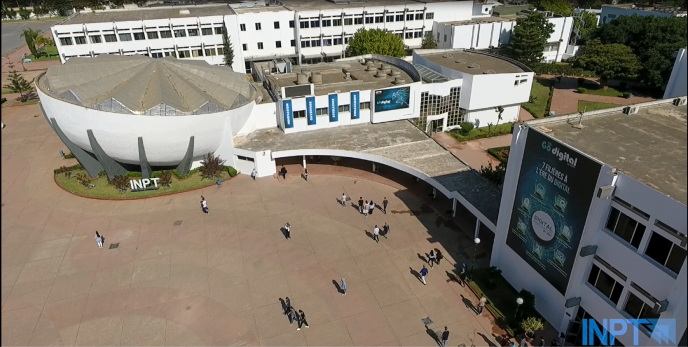

Le club CIT est un club informatique de l’INPT spécialisé dans les technologies modernes et l’innovation numérique. Notre mission est d’aider les étudiants à développer leurs compétences techniques à travers des formations, workshops, hackathons et événements IT.
Nous organisons des activités dans plusieurs domaines comme le développement web, la cybersécurité, la data science et le DevOps.
